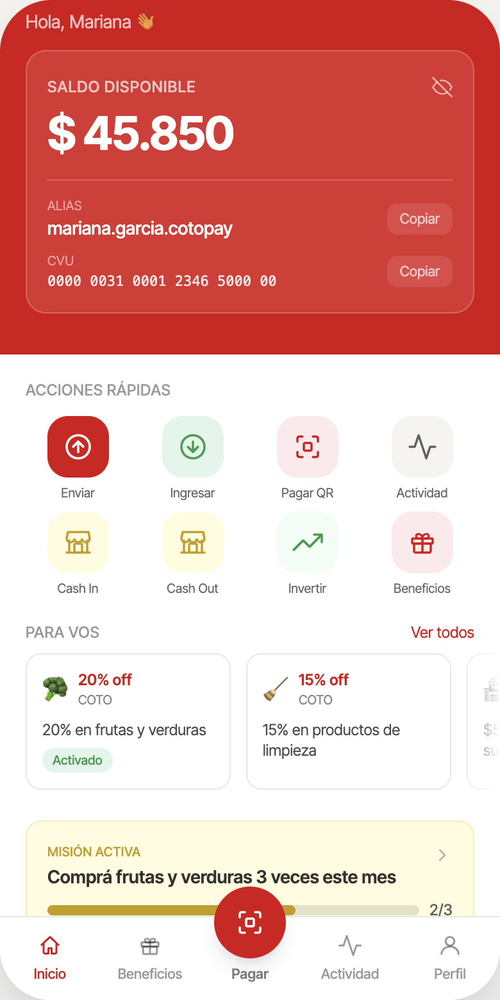
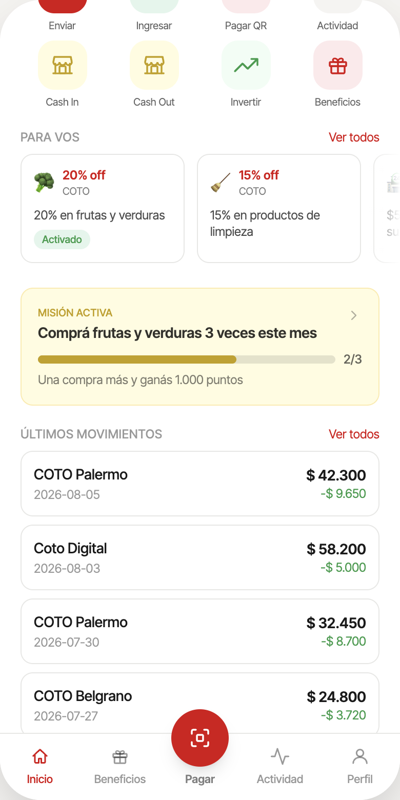
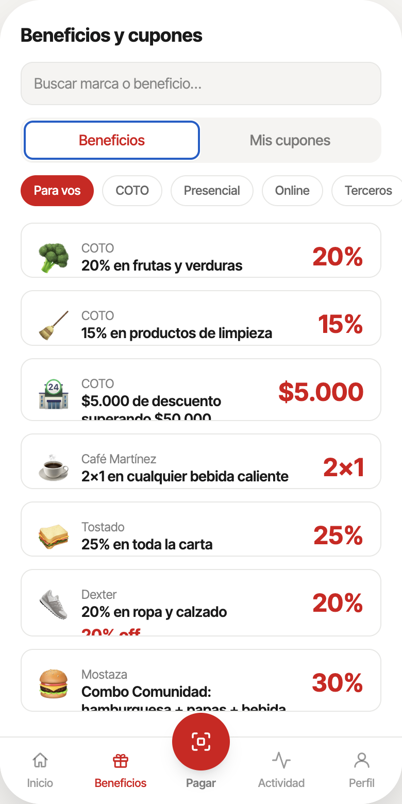
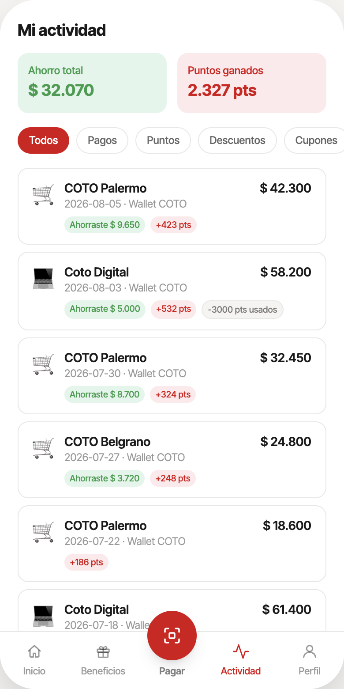
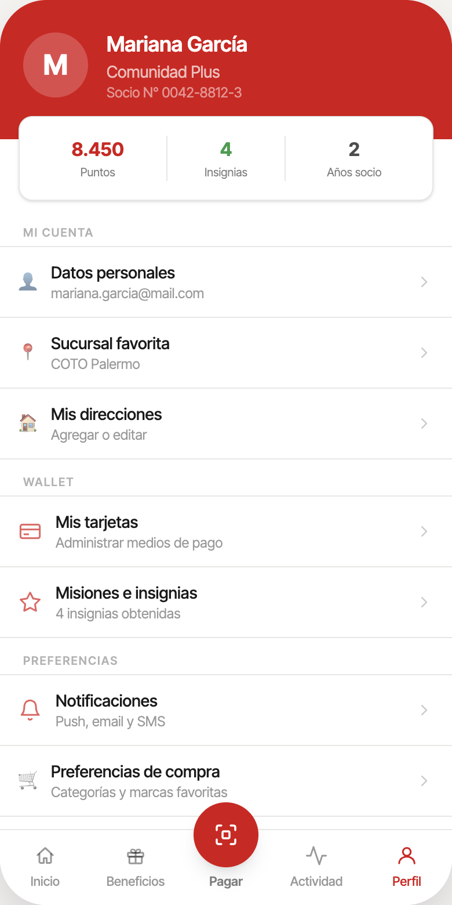

Plataforma de fidelización COTO
Plan de negocios e implementación tecnológica de una solución de datos y agentes de IA
MT10 — Innovación Tecnológica · Presentación a CFO / CEO / CMO · 10 minutos

Mariana Fiorillo · Andres Franco · Diego Pouton · Luciano Suarez · Agustin Trucco · Emma Vignoles
Maestría en Gestión de Servicios Tecnológicos y de Telecomunicaciones — UdeSA
Probá el prototipo
en tu celular
COTO lidera el mercado y lidera el e-commerce del sector.
El problema no es digital.
de las transacciones presenciales pierden trazabilidad de cliente — tanto el cliente registrado (Comunidad COTO / TCI) como el cliente casual que compra sin identificarse.
transacciones presenciales por mes
- COTO: 22,3% de participación de mercado — el líder del sector.
- Coto Digital lidera el e-commerce de supermercados en Argentina.
- COTO financia el 100% de las campañas emisoras que corren vía Mercado Pago y MODO — sin retener datos ni fidelización.
- El cliente registrado (Comunidad COTO / TCI) y el casual que compra sin identificarse quedan igualmente invisibles para segmentación, campañas y atención personalizada.
Hoy: 8 momentos, 4 fricciones críticas
Redención 3%, sin personalización
Canal físico y digital son silos
35-45% sin identificar, 12M/mes
USD 3,50/ticket, 8-15 min
COTO no controla onboarding
35-45% uso irregular
NPS del pago lo captura MP
Flywheel de datos roto
35-45% de los 12M de transacciones mensuales quedan anónimas — etapas 03 y 04 son las fricciones más costosas.
Con CotoPay: el ciclo que aprende
Primer incentivo que empuja la descarga
Redención 3%→12%
Elimina 15-25 min
100% identificados
USD 0,40/ticket
COTO controla onboarding
Switching cost acumulado
NPS vuelve a COTO
Flywheel cerrado: dato→oferta→compra
Cada transacción CotoPay es un tick del flywheel — dato capturado → mejor oferta → más lealtad
Así se ve en la app: las pantallas del flujo

Home

Transacciones

Beneficios

Actividad

Perfil
COTO es el único de los dos líderes de mercado sin billetera digital propia
| Cadena | Participación | Billetera digital propia |
|---|---|---|
| COTO | 22,3% | No — paga a un tercero (Mercado Pago) por pagos digitales en caja |
| Carrefour | 21,0% | Sí — Cuenta Digital Mi Carrefour (lanzada sept. 2025) |
| Cencosud (Jumbo / Disco / Vea) | 17,0% | Sí — CencoPay, cashback diario (desde 2023) |
- Carrefour lanzó su wallet hace menos de un año y ya está en fase agresiva de adquisición de usuarios.
- Cencosud opera dos mecanismos de fidelización en paralelo (puntos + CencoPay) desde 2023.
- La ventana para entrar sin quedar tercero en la categoría sigue abierta, pero se angosta cada trimestre.
- Shellbox (YPF): wallet embebida donde ya existe relación de compra física recurrente — el mismo modelo que propone CotoPay.
- FarmaPay: instrumento financiero lanzado sobre base de clientes de farmacia, sin ser un banco — prueba que el retail puede operar pagos sin infraestructura bancaria propia.
de las transacciones fueron vía QR en 2024
proyección 2026, siguiendo la curva de adopción actual de pagos QR en Argentina
CotoPay: una plataforma que arranca en fidelización y termina en el medio de pago
Cada transacción —presencial o digital— agrega dato al perfil unificado. El cliente casual se vuelve visible. La base de fidelización crece con cada compra.
Campañas, cupones y descuentos generados por IA para cada segmento — no para toda la base. Tasa de redención proyectada: del 3% actual al 12%.
Wallet propia integrada al POS — el pago cierra el ciclo de datos y retiene el margen que hoy va a Mercado Pago. El cliente ya conoce COTO; el paso al medio de pago es natural.
Los siguientes slides recorren los 5 puntos de contacto del cliente donde la plataforma actúa.
En caja: la recomendación llega antes que la pregunta
de latencia — el sistema recomienda, el cliente decide.
- El agente sugiere la combinación óptima de tarjeta, día y descuento disponible en tiempo real.
- Cada vez que empuja el uso de la Tarjeta TCI, mejora la transacción puntual y la calidad del dato de cliente a futuro.
- Es también el punto de contacto de mayor volumen (12M/mes) para migrar pagos hacia TCI.
Reclamo posventa: de 8-15 minutos a resolución inmediata
costo por ticket de soporte, USD
- Casos rutinarios se resuelven de forma automática, con un tope de $15.000 ARS.
- Por encima de ese monto, o ante duda, escala a una persona con todo el contexto ya recopilado.
- El cliente no repite su reclamo desde cero.
Campañas: de oferta genérica a oferta por cliente, con aprobación humana
tasa de redención de cupones proyectada
- Hoy: 4-8 horas armando cada campaña manualmente, a $120 USD, con 20% de baja relevancia percibida.
- El agente arma la combinación de oferta, segmento y canal para cada cliente.
- Un gerente de marketing aprueba el lote antes de salir — velocidad con supervisión, no autonomía plena.
Coto Digital: canasta por presupuesto y sustitutos que el cliente acepta
para sugerir el sustituto con mayor probabilidad de aceptación
- El cliente arma su lista de compras dentro de un presupuesto que él mismo define.
- Si falta stock, el sistema sugiere el reemplazo más coherente con su historial de compra.
- Reduce cancelaciones de pedidos online en aproximadamente 25%.
Redes sociales y WhatsApp: omnicanalidad con el mismo agente
- Hoy WhatsApp es un canal de difusión unidireccional; un reclamo iniciado en redes se deriva al 0800 y el cliente lo repite.
- La propuesta no crea agentes nuevos: extiende los agentes de atención y promociones como una interfaz adicional.
- Un clasificador liviano evita que el cliente tenga que re-explicar su problema en otro canal — mismo contexto, cualquier punto de contacto: eso es omnicanalidad.
Una única plataforma de datos, no seis proyectos de IA sueltos
para segmentación RFM y Data Analytics en tiempo real
- Es la respuesta directa al problema de apertura: el dato no se pierde por falta de tecnología, se pierde porque las fuentes no se cruzan.
- No se lanza de una vez a toda la base — arranca en un piloto de 15.000 usuarios y escala en dos pasos más.
- COTO tiene procesamiento de tarjetas propio (TCI) — una capacidad técnica que la mayoría de los competidores no posee y que habilita CotoPay sin depender de un banco tercero.
Cuatro segmentos, una acción en tiempo real por cada uno
Alta frecuencia, ticket alto, reciente
→ Beneficio exclusivo de categoría premium + acceso anticipado a promociones
Frecuencia media-alta, ticket estable
→ Campaña de cross-sell en categorías aledañas a su patrón de compra
Compró hace más de 3 semanas sin señal de retorno
→ Oferta de rescate personalizada por categoría ancla + notificación push
Una o pocas compras, sin patrón claro
→ Descuento de primera compra identificada + invitación al onboarding CotoPay
La segmentación se recalcula con cada nueva transacción — el perfil del cliente se actualiza en tiempo real, no en batch mensual
Un ciclo que se retroalimenta: de dato a venta a dato
El mismo presupuesto de campaña genera 4 veces más conversiones
Uplift de frecuencia y ticket promedio (escenario base)
A diferencia de MP o MODO, este ciclo solo puede existir con el dato de góndola — el activo exclusivo de COTO
Por qué es necesario hacerlo, por qué ahora
- Cada mes sin la plataforma es un mes más de dato de cliente que se genera y se pierde, sobre 12M transacciones.
- 45% de las ventas se paga hoy vía terceros: la comisión actual es de 0,6% promedio por transacción — costo que sale del grupo económico con o sin proyecto.
- Convertir el 20% de clientes de Mercado Pago a CotoPay genera ahorro directo en comisiones que fondea parcialmente el OPEX de fases siguientes.
- La ventana frente a Carrefour y Cencosud se angosta cada trimestre.
- El activo para capturarla ya existe: la Tarjeta TCI retiene 100% del valor dentro del grupo — no hay que construir nada desde cero.
- Coto Digital ya lidera el e-commerce del sector: la inversión capitaliza infraestructura que la competencia no tiene en la misma escala.
Trabajamos con un rango, no con un único número optimista
| Variable | Conservador | Base | Optimista |
|---|---|---|---|
| Tasa de adopción (MAU / Comunidad COTO) | 10,0% | 18,0% | 28,0% |
| Uplift de frecuencia de compra | +2,0% | +4,5% | +7,0% |
| Uplift de ticket promedio | +1,5% | +3,2% | +5,0% |
| Autoservicio en reclamos (atención) | 40,0% | 65,0% | 80,0% |
| WACC | 16,0% | 12,0% | 10,0% |
El escenario base asume 18% de adopción sobre un padrón de Comunidad COTO que hoy es un supuesto sin validar por la compañía — por eso el pitch no se apoya en un solo número (siguiente slide).
Inversión de plataforma para las tres fases. A partir de Fase 2 se suman USD 100.000 adicionales en OPEX para escala.
Referencia a 24 meses — ver análisis de sensibilidad en el siguiente slide para rango conservador / base / optimista.
Incluso en el escenario más adverso, el VAN se mantiene positivo
| Variación | VAN (USD) | ROI | Riesgo |
|---|---|---|---|
| Caso base | $5.241.800 | 1.505,7% | Referencia |
| Costo IA/Cloud +50% | $4.850.000 | 1.380,0% | Bajo |
| Caída de adopción −50% MAU | $2.150.000 | 620,0% | Medio |
| Uplift de frecuencia −50% | $3.100.000 | 890,0% | Medio |
| Devaluación ARS +50% | $3.650.000 | 1.050,0% | Alto |
| Falla integración POS (retraso 3m) | $4.200.000 | 1.200,0% | Alto |
No es tecnológico ni de costo de IA — ambos pesan poco en la sensibilidad.
Depende del tamaño real del padrón de Comunidad COTO, hoy sin validar por la compañía.
No pedimos el CAPEX completo hoy. Pedimos autorizar una Fase 0.
Bajo costo, alta información — diseñados para reemplazar los supuestos más importantes de este caso por evidencia propia de COTO.
Tres fases con gates de decisión — no un lanzamiento único
- No es solo tecnología: redefinir cómo se mide a Fonocoto (de volumen de llamadas a calidad de resolución), redefinir el incentivo del gerente que aprueba campañas, y capacitar al personal de caja.
Cuando el flywheel gira: dos palancas de largo plazo
- TCI ya existe como unidad financiera del holding — sin licencia bancaria nueva
- El historial de compra de CotoPay es mejor señal crediticia para consumo en supermercado que cualquier score bancario
- Captive use: el préstamo se gasta dentro de COTO → reduce incobrabilidad, aumenta ticket
- Repago descontado del siguiente pago en caja
- Pasar de segmentación por segmento (Fase 1-2) a modelos de elasticidad por cliente y categoría
- Predicción de sustitución: el sistema ya sabe qué alternativa acepta este cliente cuando falta stock
- Retail media de alta precisión: marcas proveedoras pagan por targeting sobre historial real de compra de góndola
- Detección de churn anticipada: el modelo detecta cambios en el patrón antes de que el cliente deje de comprar
Estos evolutivos no son el scope del piloto — son la razón por la que el dato que generamos hoy vale mucho más que la comisión que ahorramos
Tres riesgos que el plan debe contemplar explícitamente
COTO no necesita entrar al retail digital.
Ya lo lidera.
Proponemos cerrar la brecha de datos que hoy impide que ese liderazgo se traduzca en conocimiento del cliente y en retención de margen financiero — antes de que la ventana frente a Carrefour y Cencosud se siga cerrando.
Autorizar la Fase 0: tres experimentos de bajo costo y alta información, diseñados para reemplazar los supuestos más importantes de este caso —empezando por el padrón real de Comunidad COTO— por evidencia propia de COTO.
Panorama competitivo completo
| Cadena | Share | Programa / billetera |
|---|---|---|
| COTO | 22,3% | Comunidad COTO + Tarjeta TCI — sin billetera digital propia (usa Mercado Pago) |
| Carrefour | 21,0% | Mi Carrefour + Cuenta Digital Mi Carrefour (set. 2025, 43% TNA, banco propio) |
| Cencosud (Jumbo/Disco/Vea) | 17,0% | Jumbo Más (puntos) + CencoPay (2% cashback diario, desde 2023) |
| La Anónima | 12,5% | Plus La Anónima — cupones personalizados, sin wallet propia confirmada |
| Día Argentina | 9,0% | ClubDia — ~3,9-4M socios, 20% descuento los martes, sin wallet propia confirmada |
| Changomás | 8,7% | MásClub (PuntosMás) — usa Cuenta DNI de Banco Provincia (tercero), sin wallet propia |
Los 6 casos de uso agénticos
| Caso de uso | Autonomía | Latencia | Valor |
|---|---|---|---|
| CU-01 — Promociones y medio de pago | Nivel 2 (recomendación) | <800 ms | Muy alto |
| CU-02 — Canasta por presupuesto | Nivel 3 (ejec. aprobada) | <2.000 ms | Alto |
| CU-03 — Sustituciones en e-commerce | Nivel 3 (ejec. aprobada) | <500 ms | Alto (−25% cancel.) |
| CU-04 — Reclamos posventa (hasta $15.000) | Nivel 4 (autonomía limit.) | <1.500 ms | Muy alto ($3,50→$0,40) |
| CU-05 — Campañas hiper-personalizadas | Nivel 3 (ejec. aprobada) | Asíncrono | Muy alto (3%→12%) |
| CU-06 — Asistente conversacional TCI | Nivel 2 (recomendación) | <1.000 ms | Medio |
Escala de autonomía 0-5 según el dossier de factibilidad; ningún caso de uso alcanza Nivel 5 (autonomía total).